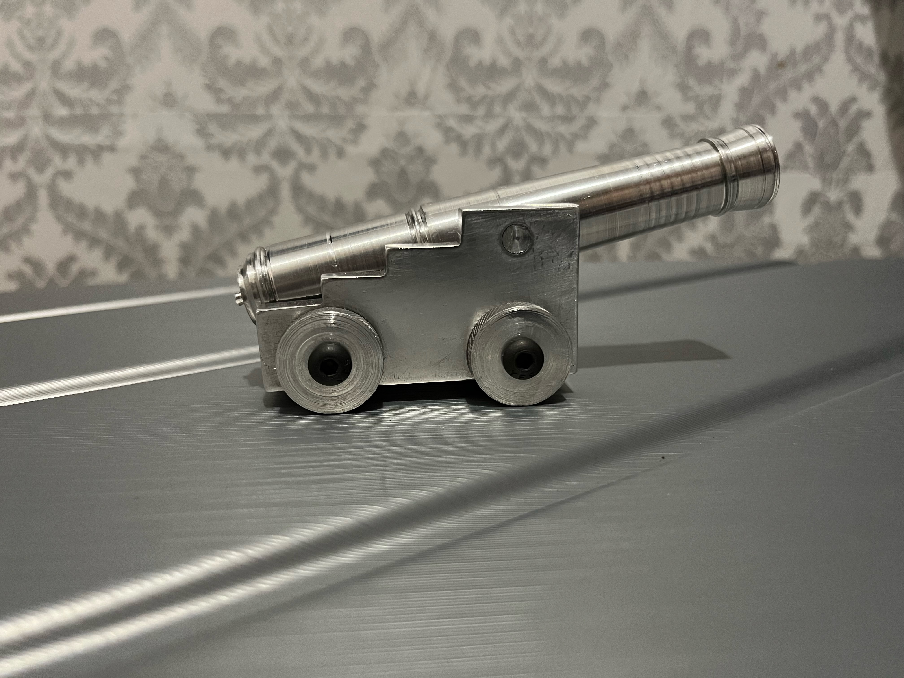
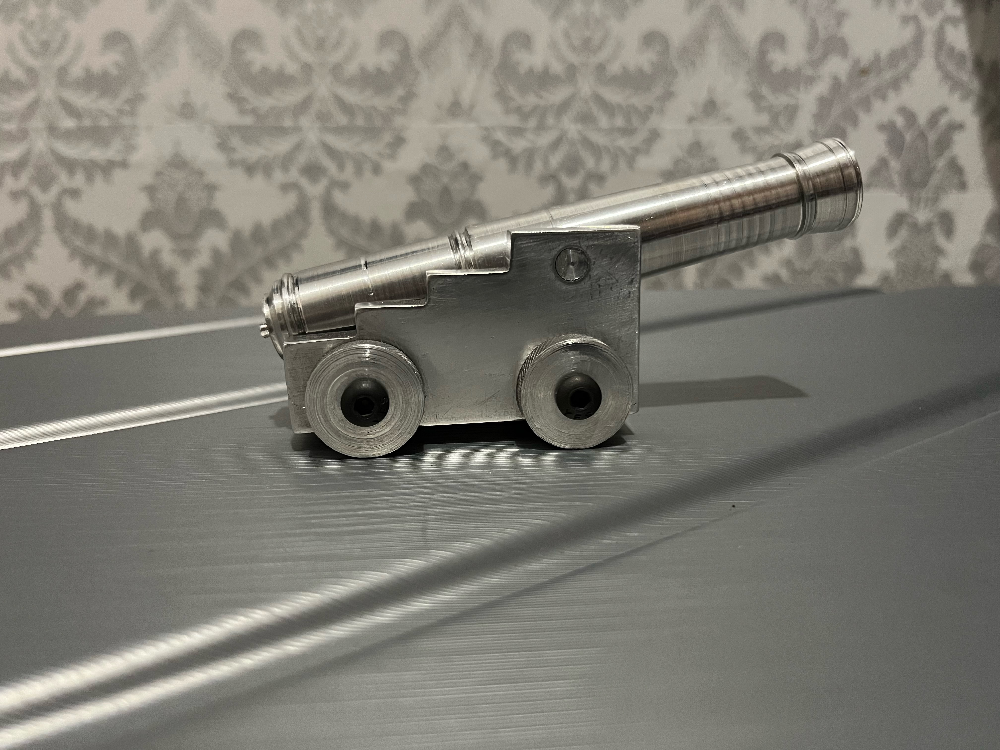

Profile

Profile
I am currently attending Rensselear Polytechnic Insitute with the focus of getting a bacheleors in Mechnaical Engineering. Although I am trying to become an Engineer, I am willing to learn all types of skills to help me become more skillful. I am currently learning coding languages during my free time as I find coding fun and closely related to engineering. In addition, one day I want to recreate and improve a game I played duuring my Elementary school days, Graal Online ERA. While my main goal is to be a successful engineer that can improve living standards and solve global issues with innovations.
I am currently seeking an Internship or a Co-op oppurtunity that will grant me hands on experience for the Fall of 2023 or Spring of 2024 term. I am interested in oppurtunities related to programming or engineering. The ideal engineering industries for me are automative and robotics. While for programming, I am seeking to improve my coding fundementals as I only have basic knowledge of the coding languages I know. However, I am also willing to work in other industries as long as I can gain new skills or improve on my current skills.

During my free time I enjoy coding for fun, as many of my personal projects all involve some sort of programming.
Playing games is also a hobby of mines, as I get to play with my friends.
Similar to games, I enjoy playing sports with my friends.
Last Editted: 02/08/23
School Attended

I attended the City College of New York for my Freshman Year (August 2021 to May 2022).
GPA: 3.62
Major: Mechanical Engineering
I am currently attending Rensselear Polytechnical Insitute (August 2022 to Current).
GPA: 4.0
Major: Mechanical Engineering
I took a HTML and CSS course over the summer of 2022, and got a certificate for completeion and understanding of the web development language. After the course I worked on a few small projects that are simple but functions the way I wanted the web to function. Certification below:
I began learning C# for fun over the summer of 2021, as I tried to create games in Unity. Although I successfully followed tutorial to understand the basic for character control and different properties. I was unable to create a functional game at the time. The first game I created worked but was filled with problems which was not what I desired. The second game I created function way smoother and through designing game, for my own interest, I learned the basic for 2D game creation and how to code in C#.
I learned Python during my time at the City College of New York. We were taught about basic usage of variables, functions, loops, arrays, and so on. Using the knowledge of python I learnt I decided to challenge myself and create a discord bot that serves little to no purpose.
I learned SolidWorks during my time a City College of New York. In the class I took we learnt how make sketches like blue prints of an object. Then we learnt how to make the object that was sketch using Solidworks. We learn about how to extrude a 2D shape to a 3D shapes or to make curvatures, wires, intrusions, shells, planes, mirroring, pattern, screws, and many more. Ultimately in the class I was able to design a hand mixer.
Click on the arrows to the side to view my projects, personal but also school projects. Some projects were failures but I learned from my mistakes.
This was the first time that I started to code for fun and I decided to challenge myself. So I try to learn how to code C# as I developed the game in Unity. The game has basic two movement and interactions inspired by Among Us. However, unlike the game Among Us, the multiplayer feature had a lot of glitches like one player movement cause another player screen to shake. Thus, this was a failure but I learnt a lot about game creation from this.
Although the game is not as smooth , I believe the game came out to be what I wanted with my limited coding skills. The purpose of the game is to solve puzzles kill monsters and beat the final boss before you die a total of ten times. The game is actually quite hard so you should give it a try. When creating this single player game I gained further knowledge on game creation with new features like inventory, NPC movements, and dropping items. Thus, the game is not perfect but included everythign I learned up to this point.
The discord bot I created didn't do a lot but included basic python code with the usage of loops, arrays, and conditional statements. During the summer of 2022 I was enrolled in SYEP, summer youth employment program, I was placed to work at the Department of Motor Vechile. There was four other SYEP workers and we decided to communicate through discord. I decided to create a bot that send annoucment during certain time of the day like when it's lunch break, when break is over, when it's time to leave, and when to start working. In addition, the bot also has a reaction tracker which was used for determining who was in the building or who went out or stayed in for lunch.
The website was made in 4 hours so the design is really simple and the functions of the website was really simple. The purpose of the website was to just give the link of the website to everyone that were full time worker at the Department of Motor Vechile since SYEP workers only work for a period of two months. Thus, I included everyones message in the website and included some of the group photos we had.
 

The cannon was made in my Engineering Processes class which we learned about workshop machinary. For the class we worked in pairs to understand how to complete each step on the manual as percise as possible. My partner and I worked really well and learnt off of each others mistake when we realize something was odd. Machines and tools that we learned how to safely used consist of the Lathe, Vertical Mill, Horizontal Mill, Band Saw, Polisher, Caliber, Micrometer, Drill Press. For each of the machinaries, we learnt basic skills like facing something off, knurling, creating ridges, angle cutting, and others. The barrel of the cannon, the pin, and the wheels are made using the Lathe, while the carriage is made using the vertical mill, horizontal mill, drill press, and band saw. Ultimately, cannon building was an enjoyable experience as it was really hands on and we collaborated really well as a pair.
The website took around 3 months to make but I only worked on the website for 2 to 3 hours a week during the month time frame. Thus, this simple website took a long time. In this website, I tried to include everything I have learned to the best of my ability. Also for the website, I tried my best to make it scaleable for different devices other than the computer. If you have any suggestion to help me improve my website you can email me using the email link located in the footer.